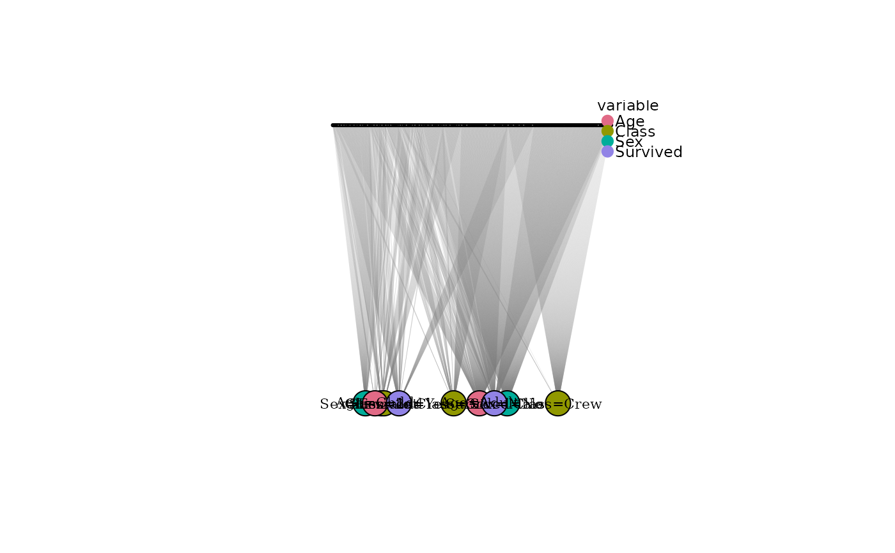
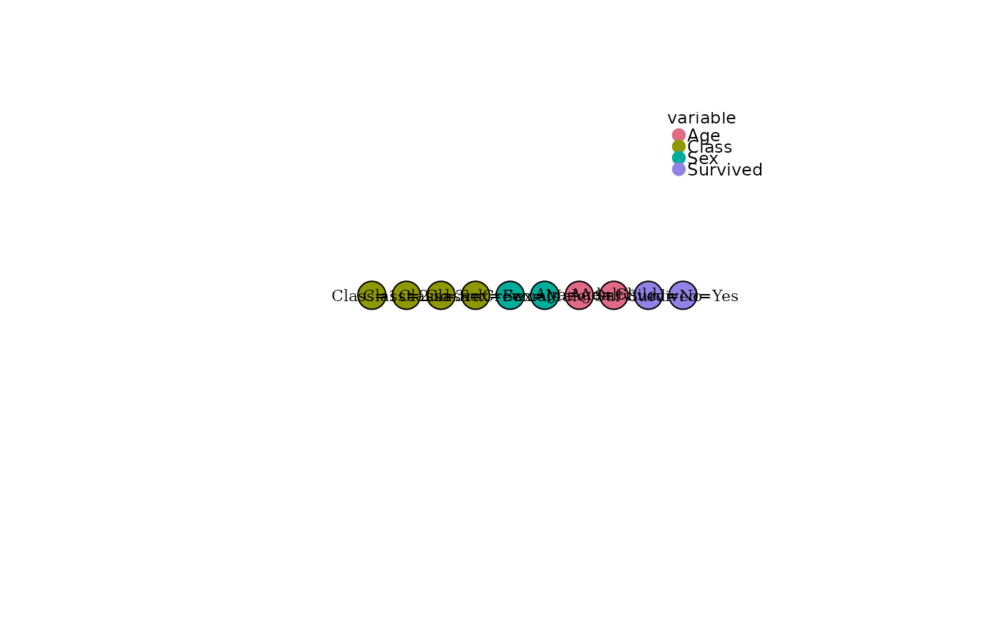

Plot a bipartite respondent-modality graph
Source:R/bipartite_modality_graph.R
plot.catbipartite.RdVisualises a catbipartite object with respondents on one side
and modalities on the other. Respondent nodes are plotted small and
unlabelled; modality nodes are plotted large and coloured by
originating variable.
Usage
# S3 method for class 'catbipartite'
plot(
x,
show_respondents = TRUE,
max_respondents = 500L,
vertex_size_mod = 18,
vertex_size_row = 2,
...
)Arguments
- x
A
catbipartiteobject.- show_respondents
Logical. If
TRUE(default), respondent-side vertices are drawn as small dots. IfFALSE, only the modality partition is plotted (useful when the number of respondents would make the plot unreadable).- max_respondents
Integer or
NULL. If the number of respondents exceeds this value andshow_respondents = TRUE, a random sample ofmax_respondentsis drawn. Set toNULLto disable. Default500.- vertex_size_mod
Numeric. Vertex size for modality nodes. Default
18.- vertex_size_row
Numeric. Vertex size for respondent nodes. Default
2.- ...
Further arguments passed to
plot.igraph().
Examples
df <- expand_table(Titanic)
bg <- bipartite_modality_graph(df)
plot(bg)

plot(bg, show_respondents = FALSE)
